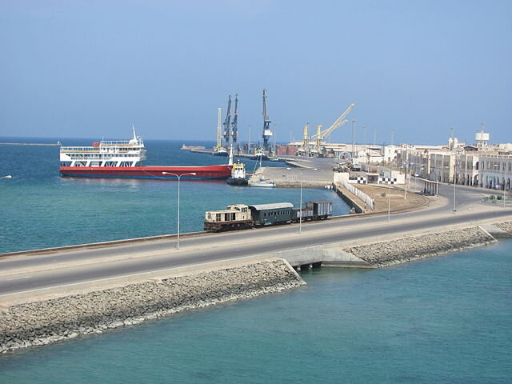
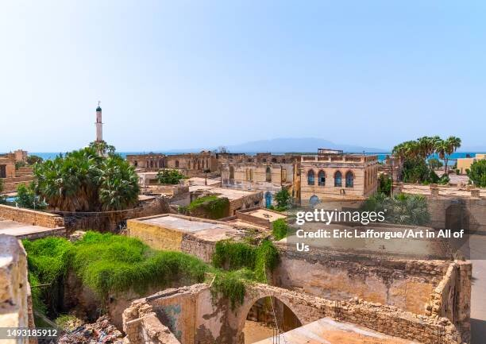
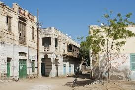
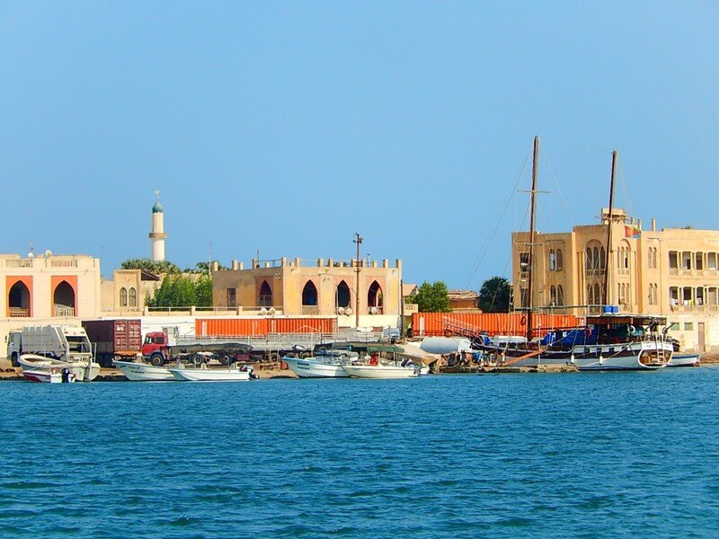

<div style="width: 720px; height: 1080px; position: relative; background: white">
  <div style="width: 720px; height: 394px; left: 0px; top: 686px; position: absolute; background: white">
    <div style="width: 400px; height: 294px; left: 160px; top: 50px; position: absolute; background: #A8DADC; box-shadow: 0px 6px 0px #1D3557; border-radius: 10px"></div>
    
    <div style="width: 207px; height: 32px; left: 349px; top: 99px; position: absolute; text-align: center; color: #1D3557; font-size: 20px; font-family: Century Gothic; font-weight: 700; word-wrap: break-word">Your guide</div>
    <div style="width: 189px; height: 71px; left: 360px; top: 145px; position: absolute; text-align: center; color: #1D3557; font-size: 15px; font-family: PT Serif; font-weight: 400; word-wrap: break-word">“I have lived at Musawa, so I can show you all of its best parts and hidden secrets.”</div>
    <div style="width: 189px; height: 18px; left: 358px; top: 242px; position: absolute; text-align: center; color: #1D3557; font-size: 16px; font-family: Arial; font-weight: 700; word-wrap: break-word">Ahmed Hassan</div>
  </div>
  <div style="width: 720px; height: 343px; left: 0px; top: 343px; position: absolute; background: #F1FAEE">
    <div style="width: 198px; height: 227px; left: 488px; top: 58px; position: absolute">
      <div style="width: 100px; height: 100px; left: 49px; top: 0px; position: absolute">
        <div style="width: 100px; height: 100px; left: 0px; top: 0px; position: absolute; background: #C4C4C4; border-radius: 9999px"></div>
        
      </div>
      <div style="width: 197px; height: 38px; left: 0px; top: 123px; position: absolute; text-align: center; color: #1D3557; font-size: 16px; font-family: Century Gothic; font-weight: 700; word-wrap: break-word"> Visit beautiful port city</div>
      <div style="width: 198px; height: 54px; left: 0px; top: 173px; position: absolute; text-align: center; color: #1D3557; font-size: 15px; font-family: PT Serif; font-weight: 400; word-wrap: break-word">Is a beautiful port sea, just off the coast of Musawa city.</div>
    </div>
    <div style="width: 198px; height: 227px; left: 265px; top: 58px; position: absolute">
      <div style="width: 100px; height: 100px; left: 49px; top: 0px; position: absolute">
        <div style="width: 100px; height: 100px; left: 0px; top: 0px; position: absolute; background: #C4C4C4; border-radius: 9999px"></div>
        
      </div>
      <div style="width: 162px; height: 35px; left: 18px; top: 122px; position: absolute; text-align: center; color: #1D3557; font-size: 16px; font-family: Century Gothic; font-weight: 700; word-wrap: break-word">Corso Venezia</div>
      <div style="width: 198px; height: 54px; left: 0px; top: 173px; position: absolute; text-align: center; color: #1D3557; font-size: 15px; font-family: PT Serif; font-weight: 400; word-wrap: break-word">Corso Venezia, boats and architecture, Massawa old town.</div>
    </div>
    <div style="width: 198px; height: 226px; left: 34px; top: 59px; position: absolute">
      <div style="width: 100px; height: 100px; left: 49px; top: 0px; position: absolute">
        <div style="width: 100px; height: 100px; left: 0px; top: 0px; position: absolute; background: #C4C4C4; border-radius: 9999px"></div>
        
      </div>
      <div style="width: 183px; height: 32px; left: 7px; top: 122px; position: absolute; text-align: center; color: #1D3557; font-size: 16px; font-family: Century Gothic; font-weight: 700; word-wrap: break-word"> Historic district street</div>
      <div style="width: 198px; height: 55px; left: 0px; top: 171px; position: absolute; text-align: center; color: #1D3557; font-size: 15px; font-family: PT Serif; font-weight: 400; word-wrap: break-word">Old town facades and the Port of Massawa gate on Via Milano</div>
    </div>
  </div>
  <div style="width: 720px; height: 343px; left: 0px; top: 0px; position: absolute; background: white">
    
    <div style="width: 412px; height: 52px; left: 154px; top: 172px; position: absolute">
      <div style="width: 412px; height: 52px; left: 0px; top: 0px; position: absolute; background: #457B9D; border-radius: 10px"></div>
      <div style="width: 355px; height: 39px; left: 28px; top: 5px; position: absolute; text-align: center; color: white; font-size: 18.72px; font-family: Aclonica; font-weight: 400; word-wrap: break-word">Enjoy a wonderful blend of urban development and countryside life</div>
    </div>
    <div style="width: 269.82px; height: 55px; left: 225px; top: 105px; position: absolute">
      <div style="width: 269.82px; height: 55px; left: 0px; top: 0px; position: absolute; background: #1D3557; border-radius: 10px"></div>
      <div style="width: 268.74px; left: 1px; top: 14px; position: absolute; text-align: center; color: white; font-size: 24px; font-family: Aclonica; font-weight: 400; word-wrap: break-word">Visit Musawa City</div>
    </div>
  </div>
  <div style="width: 720px; height: 343px; left: 0px; top: 0px; position: absolute; background: white">
    
    <div style="width: 412px; height: 66px; left: 154px; top: 172px; position: absolute">
      <div style="width: 412px; height: 66px; left: 0px; top: 0px; position: absolute; background: #457B9D; border-radius: 10px"></div>
      <div style="width: 355px; height: 49.50px; left: 28px; top: 6.35px; position: absolute; text-align: center; color: white; font-size: 18.72px; font-family: PT Serif; font-weight: 400; word-wrap: break-word">Enjoy a wonderful blend of urban development and countryside life</div>
    </div>
    <div style="width: 269.82px; height: 55px; left: 225px; top: 105px; position: absolute">
      <div style="width: 269.82px; height: 55px; left: 0px; top: 0px; position: absolute; background: #1D3557; border-radius: 10px"></div>
      <div style="width: 268.74px; left: 1px; top: 14px; position: absolute; text-align: center; color: white; font-size: 24px; font-family: Century Gothic; font-weight: 700; word-wrap: break-word">Visit Musawa City</div>
    </div>
  </div>
</div>